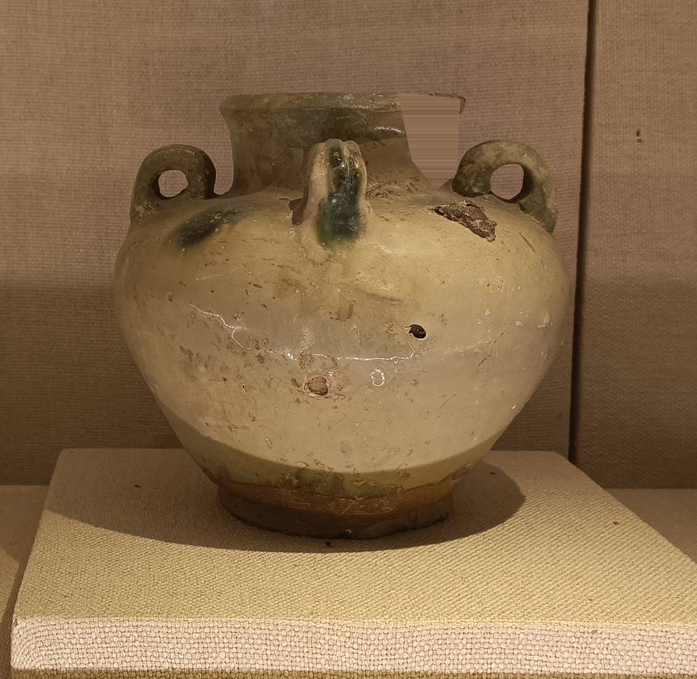
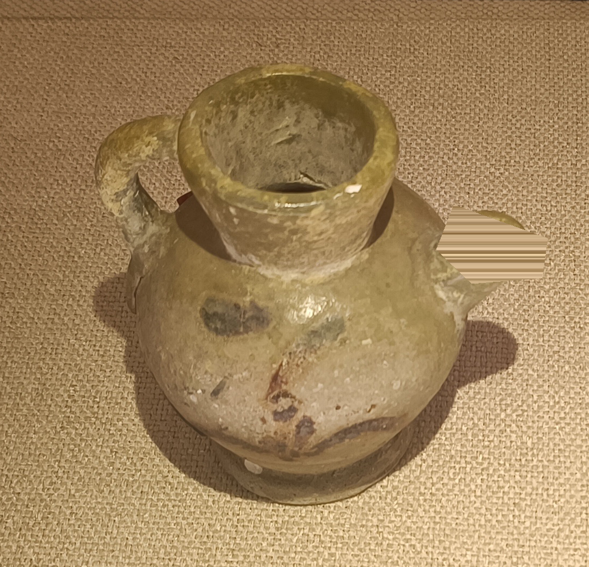
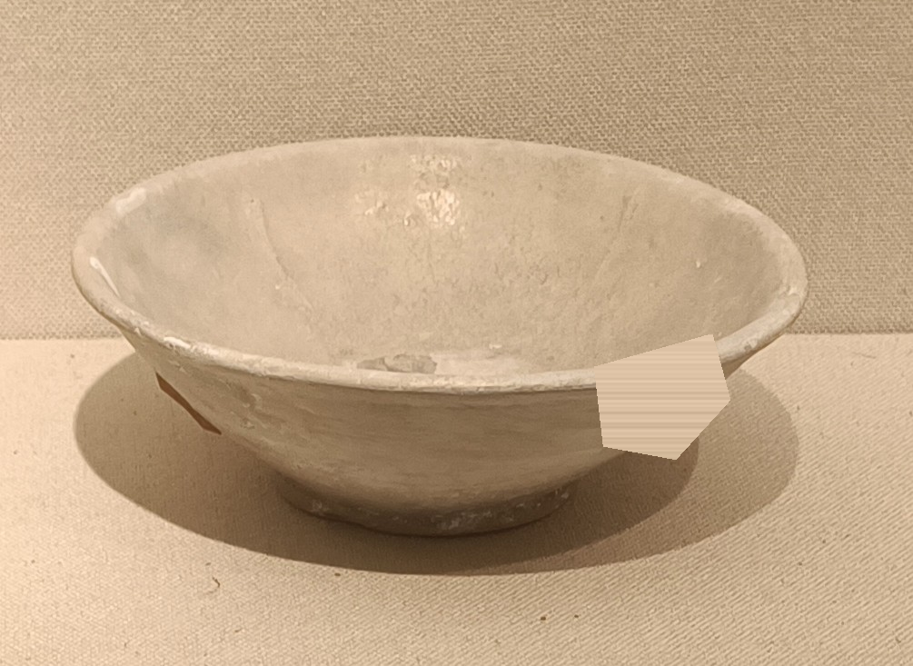

唐·邛窑釉下绿彩瓷四系罐
口沿缺失 · 教学模拟，不表示实物实际损坏。
照片来源与原始说明 · 摄影 Kcx36 · CC BY-SA 4.0

缩小到1024像素宽，人工遮去口沿区域，制作教学模拟残损；不表示实物实际损坏
三张底图均来自实拍照片。名称与年代按照片来源说明，尚未与馆方藏品编号逐件复核。缺损由课件人工模拟；AI效果不代表历史原貌。照片与衍生图按CC BY-SA 4.0提供。

口沿缺失 · 教学模拟，不表示实物实际损坏。
照片来源与原始说明 · 摄影 Kcx36 · CC BY-SA 4.0
缩小到1024像素宽，人工遮去口沿区域，制作教学模拟残损；不表示实物实际损坏

壶流缺失 · 教学模拟，不表示实物实际损坏。
照片来源与原始说明 · 摄影 Kcx36 · CC BY-SA 4.0
等比例缩小、以背景像素遮去壶流区域，制作教学模拟；不表示实物实际损坏

碗沿缺失 · 教学模拟，不表示实物实际损坏。
照片来源与原始说明 · 摄影 Kcx36 · CC BY-SA 4.0
等比例缩小、以背景像素遮去碗沿区域，制作教学模拟；不表示实物实际损坏
完整原图保存在服务端，不作为生成答案提供。教师旧备用资料的来源与修改记录保留在完整素材清单中；它们不自动成为学生线索。